StructureEditor 1.0Secondary Structure Editor and Drawing Tool |
RNAstructure Help | ||||||||||||||||||||||||||||||||||||||||||||||||||||||||||||||||||||||||||||||||||
StructureEditor Help ContentsBack to Top
The StructureEditor ProgramStructureEditor is an RNA secondary
structure editor and drawing tool. It facilitates editing the primary
sequence (inserting or deleting nucleobases) as well as modifying the
secondary structure (creating and deleting basepairs) and visualizing
the secondary structure in a 2D drawing. StructureEditor can also act as as a conversion tool for RNA-related file formats because it can open a number of file types and can also export to a variety of file formats. For example, one could open a CT structure file and export it as a Dot-Bracket (DBN) file, a Sequence (SEQ or FASTA) file, or an image (SVG, PNG, JPEG) etc. Back to Top
Getting StartedBegin using the program by either opening an existing file or by creating a new one using the menu. You can open any of the file types listed below:
You can create a new drawing using the 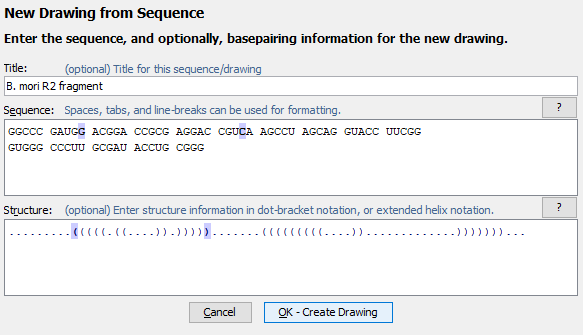 Switching between structuresOften files contain more than one structure. For example the CT files produced by the RNAstructure program Fold often contain a minimum free energy structure along with several sub-optimal structures. The StructureEditor only shows one of these structures at a time, but you can choose antoher structure to view using the menu item (or the associated toolbar button). You can also switch to the next or previous structure in a series using the menu items or .Back to Top
Drawing ModesStructures can be visualized in one of the three modes listed below. You can switch between modes using their associated menu commands, keyboard shortcuts, or toolbar buttons. Switching from one mode to another (or even redrawing in the same mode) is destructive in the sense that any changes made to the X,Y positions of bases will be reset and redrawn according to the chosen mode. (However structural changes such as basepairs and formatting changes, such as base colors, will be preserved.)
Drawing OrientationIn Radial or Circular mode, structures can be drawn clockwise or counterclockwise. You can change the direction of drawing using the menu item, but note that this setting only has an effect when the structure is redrawn.You can reverse the orienation of an already-drawn structure using the menu item . Back to Top
View and ZoomRNA structures can be quite large and it is often desirable to zoom in or out of the drawing to either see a region in greater detail or conversely to fit more of the structure into view. The following menu commands (or associated toolbar buttons) can be used to zoom to the desired magnification level.
Back to Top
Nucleobase SelectionA nucleobases (aka base, nucleotide) can be selected by clicking on its symbol (letter) or anywhere inside the circle surrounding it. Multiple bases can be selected holding down the Shift key while clicking additional bases after the first one. Alternatively, you can click on any location in the background of the drawing and drag to select multiple bases using a selection rectangle. Selected bases are highlighted by changing their outline color (to blue, by default). Selection Rectangle: 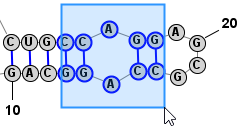 One base among the selection may have a different highlight color (lime green, by default) to indicate that it is the "focused" base. The identity of the focused base may influence the type of movements or tools that are available after selection, as described later. You can click on any base among the selection to assign it as the focused base, without changing the list of selected bases. Multiple selected bases (blue outline) and Focused base (lime green outline):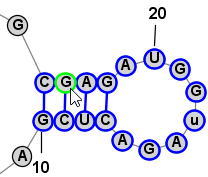
It is sometimes easier to have the program automatically select a larger section of the structure when you click on a nucleobase. For this reason, there are three selection modes, as listed below. You can switch between them using the associated Toolbar, Menu, or Shortcut Key.
Another very convienient way to select additional bases is . This operation can be peformed by simply clicking Space. This selects a Loop/Helix when one base is selected and then, if performed again, it selects the containing Branch. This is an easy way to work in Single selection mode, but to quickly select the Helix/Loop or Branch that contains the selected base (or bases). Back to TopExpanding Selection from Single Base to Motif (Helix or Loop) to Branch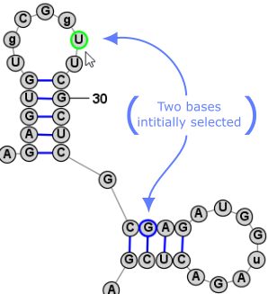 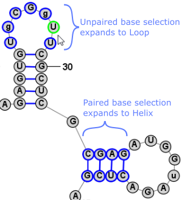 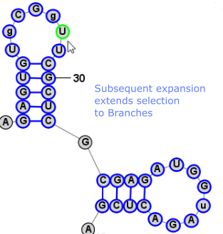 Back to Top
Adding and Removing BasepairsBasepairs can be added by holding down the Control key (⌘ Command key on Mac) while clicking (with the left mouse button) on a base and then dragging the mouse pointer to another base. A basepair will be formed between the two bases. To remove (delete) a basepair, simply click on one of the bases involved and press the Delete key. You can select multiple nucleobases at once and click Deleteto remove all basepairs on any of the selected bases. Adding a Basepair in Radial Mode: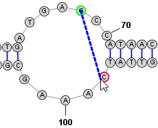 → 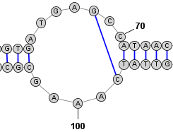 Adding a Basepair in Circular Mode: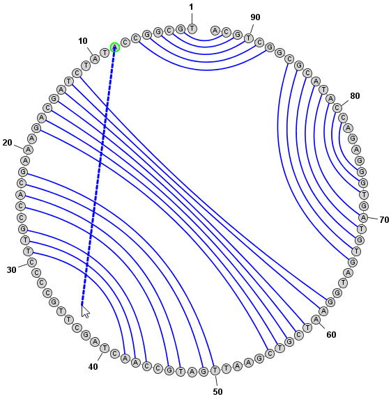→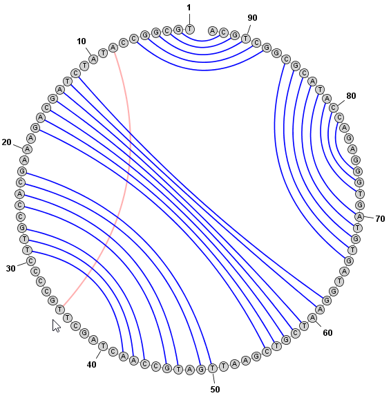 Back to Top
Inserting, Editing and Deleting Nucleobases in the SequenceBases can be inserted by first selecting a single base in the existing sequence and then clicking the menu item . You can then enter the sequence you wish to insert, either before or after the selected base. Bases can be deleted by first selecting one or more bases to delete, and then clicking the menu item . You can edit the sequence to change either a single base (e.g. from A to C) or a section of the sequence. First select the base or bases you wish to modify and the click Back to Top
Positioning Nucleobases and Using Semi-Automated Layout ToolsOnce you have made a selection, you can click (with the left mouse button) on any selected base and drag (while holding the mouse button down) to move the entire selection to a new location. In addition to being able to position individual bases manually, StructureEditor also provides several tools that facilitate moving larger motifs (loops, helices, multi-loops, branches, etc) in semi-automated ways to speed up the positioning of these elements or to redraw them in aestetic ways. Loop ResizingWhen the focused nucleobase is unpaired, you will see one of the following icons next to it: or . These icons are called "Drag Handles" and they allow you make coordinated changes to multiple bases at once by clicking and dragging them. The former icon allows you to resize a "Loop" while the latter allows you to resize a "Multi-Loop" (aka "circuit"). The distinction between the two is described in the table below. You can switch between Loop-Resizing and Multi-Loop-Resizing by clicking the the menu item . You can also temporarily toggle between the two modes by holding down the Shift key while dragging the handle.
Branch SlidingWhen the focused nucleobase is paired, you will see the following icon next to it: Free RotationWhen two or more bases are selected a rotation Drag Handle 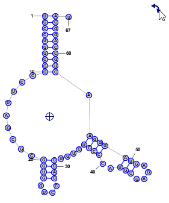 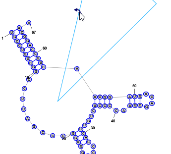
Helix and Multi-Loop RepairWhen a paired nucleobase is selected, pressing the R key (with no other keys held down) will "repair" the helix that contains the selected base. This causes all the bases in the helix to be aligned and evenly spaced along the axis of the helix. The axis of the helix is defined as the line from the midpoint of the first basepair in the helix to the midpoint of the last basepair in the helix. Similarly, when an unpaired nucleobase is selected, pressing the R key (with no other keys held down) will "repair" the Multi-Loop that contains the selected base. This causes all the unpaired bases in the Multi-Loop to be evenly spaced around the circumference of the circle formed by the Multi-Loop. It also repositions any helices that enter or exit the Multi-Loop and aligns them along the axis normal to this circle. The radius of the circle is determined based on the current average distance of each base in the Multi-Loop from the center of a best-fit circle. The above two repair operations are applied to ALL Helices and Multi-Loops that contain bases in the current selection. You can quickly repair multiple Helices and Multi-Loops at the same time by simply selecting at least one nucleobase in each Helix or Multi-Loop that you want to repair and then pressing R. Back to Top
Coloring NucleobasesClicking brings up a dialog window that can be used to color nucleobases according to a wide variety of criteria. Nucleobases have four properties that can be colored independently:
This Color Dialog has four tabs, each of which provides a different method of coloring bases:
Any of the above methods can apply colors to any of the properties (Fill, Outline, Text, or Bond) of the effected nuclobases. It is even possible to combine them, for example the Text of all bases can be colored according to sequence identity, while the Fill color can be set according to basepair probability, etc. To apply colors, simply select the desired tab and customize the colors and other settings as desired. For Basepair Probabilities or Chemical Modification, you must either type (or copy/paste) data or load it from a file. Then click the button at the bottom of the dialog that corresponds to the nucleobase property you would like to set. 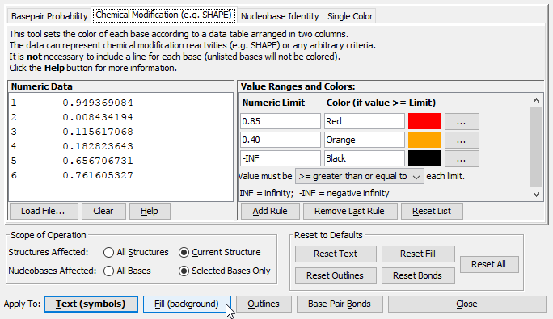 Back to Top
Saving and Exporting FilesWhen you have finished editing a structure or drawing, you can save it in several different formats. The menu command (keyboard shortcut: Ctrl+S or ⌘Cmd+S on Mac) will let you save the drawing in the StructureEditor's native file format (Nucleobase Structure Drawing, NSD). This format saves all sequence, structure, layout (X, Y positions of bases) and formatting (e.g. color) information. It is also possible to export information from the drawing in several other formats using the menu command (keyboard shortcut: Ctrl+Shift+E or ⌘Cmd+Shift+E on Mac). You can then select the desired output file type from the File Type drop-down menu at the bottom of the Export Drawing dialog that appears. Some of the output formats are listed below.
|
|||||||||||||||||||||||||||||||||||||||||||||||||||||||||||||||||||||||||||||||||||
|
Visit The Mathews Lab RNAstructure Page for updates and latest information. |
|||||||||||||||||||||||||||||||||||||||||||||||||||||||||||||||||||||||||||||||||||
 Format > Redraw Linear
Format > Redraw Linear View > Zoom In
View > Zoom In View > Zoom In
View > Zoom In Edit > Select Individual Nucleobases
Edit > Select Individual Nucleobases Edit > Select Branches
Edit > Select Branches